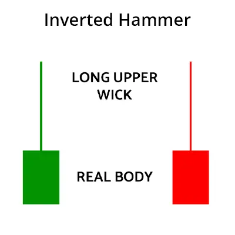
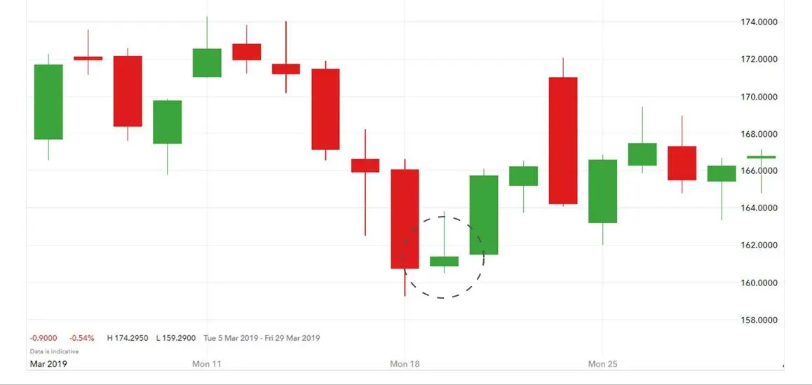

முதிர்ந்த சுத்தியல் முறைமை ஒரு வணிக முறைமை, இது பங்குச் சந்தையில் கீழே சாய்வதை
முடித்து மேலே சாய்வதை குறிக்கும். இந்த முறைமை ஒரு ஏகப் பட்டிரிக்கையால் உருவாக்கப்படுகிறது.
இது ஒரு சுத்தி மேல் நீட்டிக்கும் பட்டறத்தில் அதுவே தனது மேலே திறந்த விலையின் சமீபத்தில்
மூடுகிறது.
முதிர்ந்த சுத்தியல் முனைமை ஒரு பெரும் மேலே சாய்வு சிக்னலை அளிக்கின்றது.
இந்த முறைமையை காணும்போது, பங்குச் சந்தையில் மேலே சோதனைக்கு வணிக
செய்ய முடியும்.
